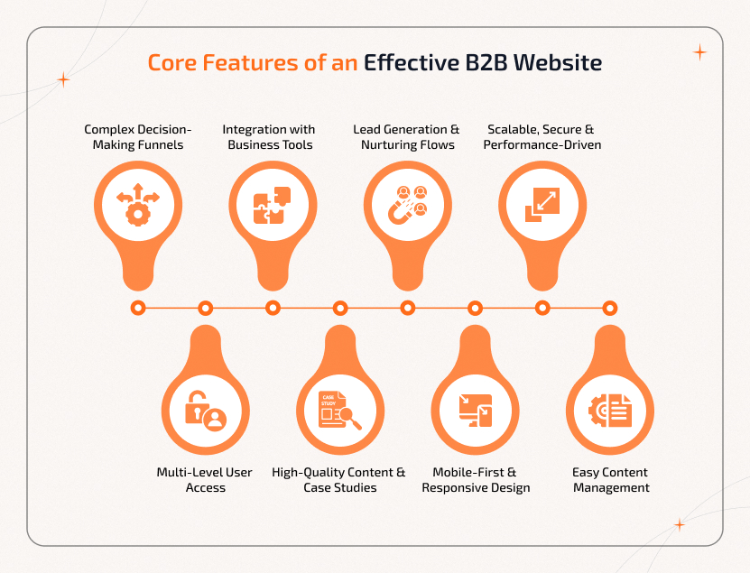
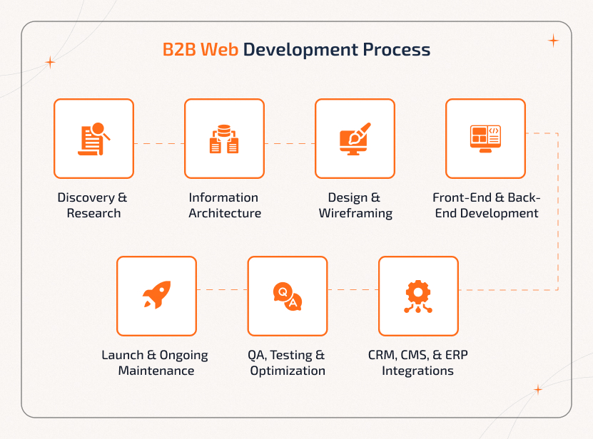
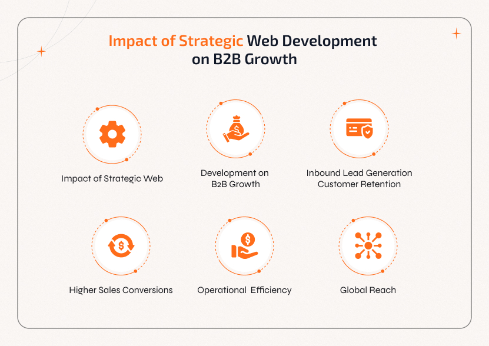

B2B web development for any business is no longer about building a digital brochure; rather, it is all about creating high-impact digital experiences and acting as the most powerful sales engine. Today's websites must influence decision-makers, speed up enterprise growth, and support long-term business relationships.
With 94% of B2B buyers doing online research before making a purchase, and over 70% of the buyer journey completed before they even speak to a sales representative, your website plays a central role in lead generation and deal closure.
Whether you are a start-up witnessing steady growth or a global enterprise scaling operations, a strategic B2B web development approach is required for long-term success, driving conversions, building trust, and turning browsers into business opportunities.
What is B2B Web Development & Why It Matters?
B2B web development, also known as business-to-business website development or B2B web application development, is the process that involves designing and building websites and digital platforms that help businesses connect, convert, and collaborate with other businesses. These websites are often part of larger digital ecosystems and play a major role in lead generation, product/service education, collaboration, and ongoing customer engagement.
Unlike business-to-consumer (B2C) websites that deal with emotion-driven purchases and quick checkouts, B2B websites are built for logic, trust, and long-term relationships. i.e., these websites are designed to guide multiple users through complex buying cycles, offer personalized content, tech documentation, pricing tiers, and integration with existing tools like CRM & ERP systems.
Core Features of an Effective B2B Website
A successful B2B website is built to convert complex buyer experiences into seamless digital experiences. The core features ensure your website supports business growth, builds trust, and drives long-term relationships.

1. Complex Decision-Making Funnels
B2B purchases usually involve many people. Your website should guide each person with clear messages, helpful content, and strong trust signals.
2. Multi-Level User Access
Offers secure, role-based access for clients, partners, distributors, and internal teams. Thus, each user is allowed to see only what they need.
3. Integration with Business Tools
Your website connects effortlessly to ERPs, CRMs, payment systems, and inventory tools to sync data and automate workflows while keeping everything running smoothly.
4. High-Quality Content & Case Studies
Help potential clients with detailed blogs, guides, and success stories that answer their questions and build trust.
5. Lead Generation & Nurturing Flows
Smart contact forms, gated content, and automation features on your site should be capable of capturing leads and moving them through the funnel efficiently.
6. Mobile-First & Responsive Design
Since decision-makers often browse on mobile, your website should be fast, responsive, and look great on all screen sizes.
7. Scalable, Secure & Performance-Driven
Your website should be built to handle high traffic, scale with business growth, and meet enterprise-grade security and performance standards.
8. Easy Content Management
Supports your marketing team with a flexible CMS like WordPress, Webflow, or a headless CMS to manage updates without relying on developers.
Key Differences Between B2B and B2C Web Design Approach
Although both B2B and B2C websites' sole purpose is to convert the audience into leads, the strategies behind both models' design are different. It includes the length of the buyer journey to the type of tools integrated. Thus, it is vital to understand the differences to build an effective lead generation web design for B2B.
The table below represents the core differences between B2B and B2C website design practices.
| Aspect | B2B Website Design | B2C Website Design |
|---|---|---|
| Buyer Journey | Longer, multi-step decision-making that involves multiple stakeholders | Short, emotional & often impulsive purchases |
| Content Style | Informative, value-driven, with a focus on ROI & problem-solving | Entertaining, product-focused, emotionally engaging |
| Conversion Strategy | Multiple CTAs, lead forms, gated content & demo requests | “Buy Now” buttons, limited-time offers & simple checkout flows |
| CRM Integration | Custom CRM integration is common to manage B2B relationships & sales pipelines | Basic or no CRM, focused on transactional data mostly |
| CMS Use Case | Advanced B2B content management systems (CMS) that handle blogs, case studies, etc. | Basic CMS for product listings or marketing content |
| Lead Generation | Priority on B2B web application development that nurtures leads & educates users | Focus on converting traffic into direct sales quickly |
How B2B Website Design Powers Successful B2B Website Development
B2B website development does not just involve clean code and integrations; it starts with smart, user-focused design. Here is how smart B2B website design supports powerful development:
1. Clear Layout for Long Sales Cycle
With a well-structured site, it is possible to guide multiple users, like buyers, managers, executives, etc., through the information they are looking for at every stage of their buying journey.
2. Strong B2B UX/UI Design
Clean visuals and intuitive navigation open up the possibility to use the website easily, reinforce your brand's credibility, and build trust by partnering with professional buyers.
3. Mobile-First & Responsive Design
Since most stakeholders browse on phones and tablets, it is essential for your website to load faster, look sharp, and work perfectly across all screen sizes.
4. Smart CTA Placement
Whether it is about booking a demo, downloading a resource, or contacting sales, clear and well-placed buttons, forms, and prompts encourage users to take action.
5. Visual Hierarchy
By strategically using colors, fonts, and layouts, your website helps visitors effortlessly spot key messages and understand the content easily.
6. Scalable Structure
As your business grows, the design of your website should evolve, as it sets a solid foundation for future updates, new pages, or integrations.
Partner with us to design B2B websites that engage decision-makers, drive action & scale growth.
Why B2B Website Development is Important for Business Growth?
It is important to note that B2B website development is more than just technical implementation. It is what turns your website into a growth engine. Here's why investing in B2B web development is critical:
- Boosts lead generation with data capture and automation.
- Improves business credibility with responsive B2B websites.
- Power growth through scalable B2B websites.
- Improves user journey via intuitive enterprise web design.
- Seamlessly integrates with your existing systems, like CRMs or ERPs.
- Supports multi-device accessibility for decision-makers on the go.
B2B Website Design Best Practices That Maximize Conversions
To turn visitors into leads, great B2B website design needs more than just good looks. It should be designed in such a way that it communicates the company's value, builds trust, and helps users take action in a better way. Get to know the key design practices that boost results:
1. Clear messaging that describes what your business offers and why it matters.
2. Showcasing client logos and case studies to build trust with new visitors.
3. Multiple calls-to-action (CTAs) are placed across different sections to match different stages of buyer journeys.
4. Blog and resource sections to show your industry expertise and boost SEO.
5. Responsive B2B websites that work smoothly on all devices.
6. Enterprise web design is focused on performance, scalability, and professional appearance.
7. Industry-specific B2B web development to align with the unique needs of your target audience.
Businesses can partner with a skilled website development company or B2B website development agency to understand how to apply these best practices to craft high-converting websites tailored to your business goals.
The B2B Web Development Process - Step-by-Step Process
The B2B web development process should be well-structured, strategic, and scalable, whether you're building a B2B web application, a sales-driven portal, or a content-rich website. Get to know how expert B2B web developers transform your project from idea to conversion:

This step ensures your B2B website developer builds the right B2B digital solution that is not just a good-looking one. The foundation of a high-performing B2B website starts with:
- Understanding your business goals, audience, and competitors.
- Defining key features and functionality for custom B2B web solutions.
- Setting up KPIs that match your industry and business goals.
A well-structured IA is vital for B2B portal development and long buyer journeys. It is a foundational step and involves organizing content for clarity and user intent. This includes:
- Creating logical page structures, user flows, and navigation paths.
- Building a scalable sitemap to support future content growth.
- Laying the groundwork for an intuitive B2B content management system (CMS).
This is the step in which functionality meets creativity. Thus, every decision supports UX that drives engagement and trust. It involves:
- Building wireframes to visualize content placement and user journeys
- Applying clean, conversion-focused B2B web design and development principles.
- Prioritizing mobile-first and responsive layouts for better accessibility.
During this step, your website comes to life with modern, scalable tech. Businesses can rely on a trusted B2B website development service provider to combine functionality and flexibility. This step is all about:
- Using the latest frameworks for fast, secure B2B web application development.
- Building custom features tailored to your workflows and buyer needs.
- Ensuring cross-browser compatibility and optimized performance.
It is during this step that your website gets smarter and more efficient. With custom integrations, manual tasks get reduced and thus speed up lead response time. This process is all about:
- Connecting your site to existing CRMs, marketing tools, and ERPs.
- Setting up a robust CMS for B2B websites that supports content updates.
- Enabling automation and data sync across your ecosystem.
Quality is never a negotiable term in professional B2B website services. Thus, it is vital to check every pixel, click, and form to ensure perfection. This process covers:
- Conducting performance testing, security audits, and device/browser checks.
- Optimizing loading speed and responsiveness.
- Fixing bugs and refining user experience based on real use cases.
A great B2B website agency offers long-term digital growth. With this process, partners will handle the following:
- Deploy your website securely and monitor early traffic.
- Provide ongoing maintenance, CMS support, and content updates.
- Scale features as your business evolves.
Custom Vs Template-Based B2B Web Design – Which One Delivers Better ROI?
If you are a B2B business deciding between a ready-made template and a custom design, then here is what you should be aware of:
Templates will save time upfront, but often limit your growth, flexibility, and integration needs. While they seem quick to launch, they often fall short when your business needs the following:
- Complex workflows
- Advanced user permissions
- Custom CRM/ERP integrations
- API connectivity with other platforms
- Enterprise-grade security
- Limited long-term scalability support
Why Choose Custom B2B Web Design & Why Does It Win Over Template-Based?
A custom B2B website is built to work for your unique business needs and client requirements. The advantages of using custom B2B web development include:
- A website that works for your sales pipeline and partner ecosystem.
- Offers seamless integration support with the tools you are already using.
- Provides far better performance, speed, and user experience.
- Comes with enhanced security and data control.
- Offers long-term ROI through scalability and ownership.
Businesses can consider partnering with a professional B2B website development company, as they can help you work beyond basic templates and offer a platform that grows with your business. Whether it's a custom dashboard, API systems, or B2B portal development, custom B2B web design gives you full control.
B2B Web Development Use Cases That Transform Business Operations
Each business operates in a specific ecosystem, and thus, the B2B web development is never a one-size-fits-all. The right B2B web design and development strategy will reflect the industry demands, buyer behaviour, and operational workflows.
Some of the most impactful B2B website development use cases delivered by leading B2B web agencies are as follows:
Platforms developed for wholesalers, distributors, and manufacturers should support bulk ordering capabilities, tiered pricing for different client groups, personalized product catalogues, and integration with ERP & inventory management systems.
Consider a custom B2B eCommerce website development project that reduced procurement cycles by 35% for a global supplier.
Professional, brand-centric websites will be built for credibility and lead nurturing. They often feature detailed service & product pages, leadership content hubs, and investor relations sections
For example, for a consulting firm, B2B web developers developed a responsive corporate web development solution that increased the inbound leads by 50%.
Custom platforms designed for niche requirements such as healthcare supplier ordering systems, logistics tracking dashboards, construction project collaboration tools, etc.
Consider B2B web application development for a logistics company that comes with real-time shipment visibility.
This covers high-conversion websites optimized for B2B UI/UX design and marketing integration that support automated lead capture, CRM integration for tracking sales, and conversion-focused landing pages.
For example, B2B website development services deliver a 3x increase in sales-qualified leads for a SaaS provider.
This includes customized B2B SaaS platform development solutions that let businesses provide subscription-based services, manage client accounts, and offer data analytics and reporting dashboards.
Consider a B2B web development company that builds a scalable SaaS platform with multi-tenant architecture for the finance sector
What's the Strategic Advantage of B2B Ecommerce Website Development?
B2B Ecommerce doesn't just involve including products online; rather, it's about building systems that can streamline procurement, support negotiation, and drive bulk sales. Unlike B2C platforms, B2B ecommerce development needs complex functionality that should align with your buyers’ purchase needs.
For this to work, your B2B web development strategy should go beyond visuals and focus on workflows, scalability, and seamless integrations.
- Quote-based checkouts for negotiated pricing deals.
- Tiered pricing models customized to fit different buyer segments.
- Purchase order and invoice workflows for easier reconciliation.
- Custom catalogues based on client profiles or contract terms.
- Seamless integration with CRMs, ERPs, and supply chain platforms.
The above features are essential and not optional for modern B2B ecommerce success. Thus, collaborating with a B2B ecommerce website design agency allows you to build systems that support real-time buyer experiences, data sync, and long-term scalability.
As a B2B web development agency, we design, integrate, & deliver platforms for business.
Essential Tools & Technologies for B2B Web Development Success
It is vital to choose the right development tools when building a high-performing B2B website. The right tech stacks ensure your platform is secure, scalable, and optimized for lead generation.
The popular tools and technologies for B2B web development include:
1. Content Management Systems (CMS)
The most common choices include WordPress, HubSpot, & Drupal. B2B website development agencies choose them for integration and flexibility.
2. eCommerce Platforms
For B2B eCommerce website development, tools like Magenta, Shopify Plus, BigCommerce B2B Edition, etc., offer bulk ordering, tiered pricing, and custom catalogues.
3. Web Development Frameworks
For developing fast and responsive B2B web applications, companies rely on tools like React.js, Angular, Vue.js, etc.
4. CRM & ERP Integrations
Companies can choose custom CRM integration with the help of popular tools like Zoho, Salesforce, and HubSpot as they streamline lead nurturing.
5. B2B Portal Development Tools
For enterprise-level B2B web design and development, Laravel and Django offer robust backend support.
By partnering with a reliable B2B web development company, they will align these tools with your business goals and not just with the latest trends.
Common B2B Web Development Challenges & How to Solve Them – Explained
Building B2B websites is not simple. Care must be taken to ensure they serve complex business needs. Check out the top challenges and how to overcome them in brief:
1. Content Overload
Often, product specs, case studies, and whitepapers can overwhelm users. This can be resolved with smart UX and modular content design that helps streamline delivery.
2. Multiple Decision-Makers
Your website must be helpful for buyers, executives, and engineers. This can be better dealt with through persona-based content and navigation.
3. Platform Integrations
B2B websites often need to connect with CRMs, ERPs, inventory tools, and email platforms. This can be better managed with careful backend planning and custom development.
4. Security & Access Control
It is critical to protect client data, quotes, and contract portals. Thus, it is important to build a B2B site with advanced security features and role-based access.
5. Globalization Needs
If you serve global clients, then your site needs to support multiple languages, currencies, and local compliance standards.
All these challenges can be better overcome by working with a skilled B2B web development company. The expert web developers working there will help you design your site for scalability, security, and smooth integration. Thus, they ensure your website works as hard as your sales team.
Impact of Strategic Web Development on B2B Growth
Are you still unsure about investing in custom B2B web development? Then you should be aware that the right strategy doesn't just make your site look better—it directly boosts key business results.

1. Inbound Lead Generation
An optimized B2B website consistently fills your pipeline with qualified leads through SEO, content marketing, and tailored user journeys.
2. Customer Retention
With user-friendly portals, fast load times, and personalized experiences, existing clients keep coming back, which in turn improves retention and long-term value.
3. Higher Sales Conversions
By offering complex pricing, quotes, and approval workflows, a strategically planned website can shorten the sales cycle and improve deal closure rates.
4. Operational Efficiency
With automated forms, system integrations (CRM, ERP), and self-service options, manual work is reduced, freeing up your sales and support team.
5. Global Reach
Custom-built B2B sites are better equipped to support multiple languages, currencies, and regulatory needs. This, in turn, helps businesses expand internationally with ease.
Several data sources show that businesses using professional B2B website development services get up to 35% faster sales cycles and 50% higher client engagement during the first year alone.
How Much Does B2B Web Development Really Cost?
The cost of developing a B2B website depends on factors like functionality, integrations & the scope of design. We can expect a simple corporate site to start at $5,000 - $10,000 while enterprise-grade B2B portals can be $50,000 and above.
The cost factors to consider include:
1. Scope & Features
A custom B2B web solution with eCommerce, CRM integration & automation costs more than basic sites.
2. Design Complexity
Advanced B2B UI/UX design and industry-specific branding add to the development time.
3. Integrations
The pricing changes based on the integration with ERP systems, payment gateways, or proprietary tools.
4. Hosting & Maintenance
Ongoing B2B website development services include security updates, backups, and optimizations.
FYI - Investing in professional B2B website development services often provides a higher ROI as it involves improved lead generation, better customer experience, and operational efficiency.
Why Businesses Should Choose Sparkout as a B2B Web Development Partner?
Not all B2B website development companies aim to deliver the strategic value your business deserves. At Sparkout, we provide a powerful mix of industry expertise and technical excellence to every project.
Our experts not only build B2B websites, but they also ensure to build digital growth engines that generate leads, retain, and scale.
Get to know why B2B brands choose us:
- We have proven experience in B2B website design & development.
- Our experts possess a deep understanding of enterprise workflows & systems.
- We offer tailored solutions aligned with your sales & marketing funnel.
- Our service offers seamless integration with CRM, CMS, ERP, and other tools.
- We work with scalable architecture for global and multi-division companies.
- Our team ensures transparent project management with ongoing support.
Partner with Sparkout, a trusted web development company, to bring your vision to life.
Final Words - Why B2B Web Development Matters?
Website development for B2B companies involves a lot more than designing. It acts as a growth engine, and the right website attracts leads, gains trust, supports sales, and scales with your business. Investing in the right strategy and partner will set you up for long-term success in today's digital-first B2B world.